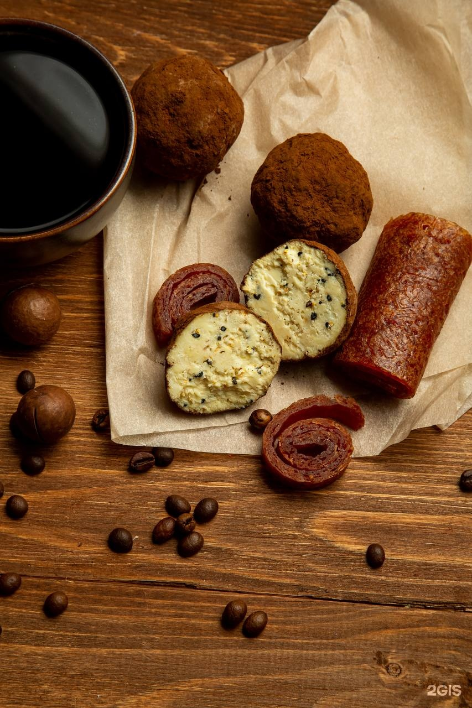

Молоко и топлёное молоко
Домашнее молоко с плотным, сливочным вкусом. Топлёное — с карамельной ноткой, для каши, какао и просто в кружку.
С чем: каша, кофе, какао, блины.
Молоко, творог, масло, колбаса, соусы и десерты — всё собственного производства. Тот же принцип: короткий состав, короткий срок хранения, настоящий вкус.
Цены и наличие уточняйте на витрине или в мессенджере — ассортимент меняется.
Домашнее молоко с плотным, сливочным вкусом. Топлёное — с карамельной ноткой, для каши, какао и просто в кружку.
С чем: каша, кофе, какао, блины.
Настоящий творог, а не творожный продукт. Рассыпчатый, с чистым молочным вкусом. Хорош с медом, сметаной, зеленью или в сырниках.
С чем: завтрак, сырники, запеканка, начинка для блинов.
Густая, ложка стоит. Без растительных жиров и загустителей. В борщ, в соус, в творог — и просто на хлеб.
Тот самый вкус из детства: мягкая кислинка и сливочное послевкусие. Покупатели специально приезжают за ней.
С чем: пить так, с блинами, с сырниками.
Питьевые и густые, натуральные, без лишнего сахара. Для завтрака, перекуса и детям в школу.
Домашнее масло с ярким сливочным вкусом. Топлёное — для жарки и для тех, кто любит насыщенный вкус.
С чем: на хлеб, в кашу, для выпечки.
Нежный творожный сырок в шоколадной глазури. Маленькая радость, которую можно взять с собой.

Та самая, «как из детства»: плотная, ароматная, без лишних добавок. Покупатели отмечают, что она всегда свежая и «настоящая».
С чем: на бутерброд, к картошке, в нарезку на стол.
Ассортимент меняется — уточняйте в магазине или в мессенджере.
Спросить о наличииСоусы, которые мы делаем сами. Один из любимых у покупателей — «апельсин-виски»: яркий, с цитрусовой ноткой и лёгкой терпкостью. Отлично к сырной тарелке.
Домашняя лапша, которую достаточно бросить в бульон. Вкус домашнего супа без полутора часов у плиты.

Хинкали, пельмени, вареники, голубцы, долма, фаршированный перец, котлеты, рулеты для запекания, блины. Лепим руками, замораживаем, держим в наличии и под заказ. Цены — от 260 ₽ за кг.
Молоко с настоящими сливками, творог, который не «резиновый», колбаса, в которой есть мясо, и сырники, которые не стыдно дать ребёнку.
«Очень нравится творог и молоко — вкусно и натурально».
«Колбаса "Московская" как из детства, всегда свежая».
«Дети теперь с удовольствием едят творог и йогурт».